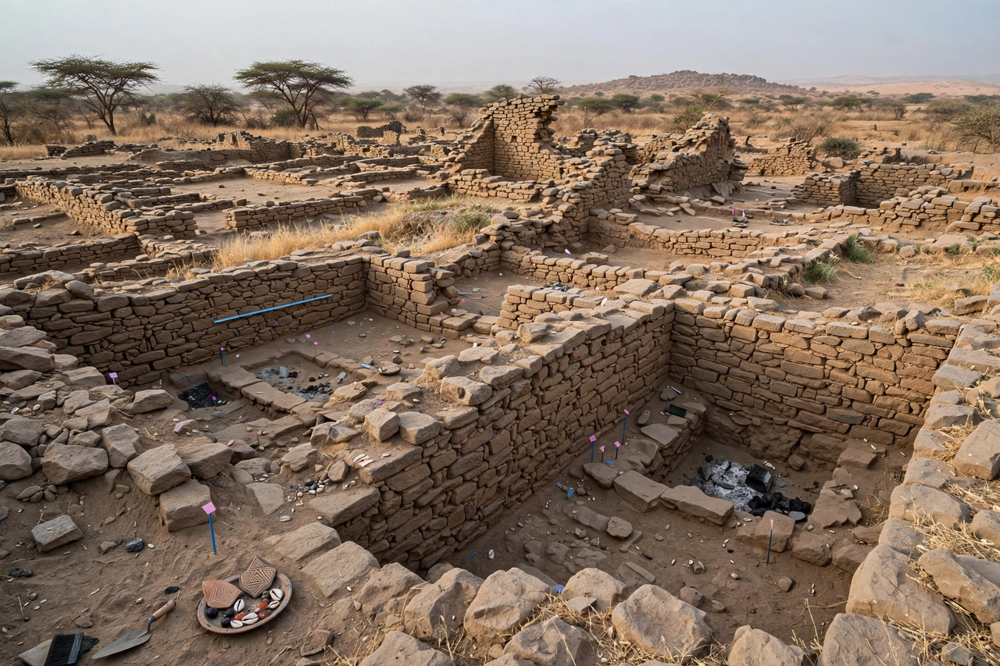

Kumbi Saleh (Koumbi Saleh) is the site of a ruined medieval city in south-eastern Mauritania, widely identified as the capital of the Ghana Empire (Wagadou), the earliest known large state of West Africa. At its height between roughly the 9th and 11th centuries AD it was a major terminus of the trans-Saharan trade in gold and salt.
The fullest description comes from the 11th-century Andalusian geographer al-Bakri, writing in 1067–68, who describes the capital as two towns on a plain about ten kilometres apart. One, inhabited by Muslims, had twelve mosques, scholars, and merchants' quarters; the other, called El-Ghaba ("the Forest"), was the royal town, containing the king's palace, the royal grove and the tombs of the kings, guarded against intrusion. The king held court surrounded by elaborate gold regalia, and al-Bakri describes a great gold nugget kept at court and a royal audience system using drums and intermediaries.
Soninke merchants of Ghana controlled the flow of gold from the Bambouk and Bure fields northward in exchange for Saharan salt, copper and cloth, taxing goods passing through the capital. The city declined in the 11th–12th centuries amid pressure from the Almoravids to the north (traditionally dated to a conquest in 1076, though the extent of Almoravid destruction is debated), shifting trade routes, drought and overgrazing. Excavations by French archaeologists beginning in the 1910s, and major work in 1949–51 and the 1970s, uncovered stone houses, a mosque quarter and imported goods confirming the site's commercial importance.
See also: Almohad Caliphate · Marrakesh